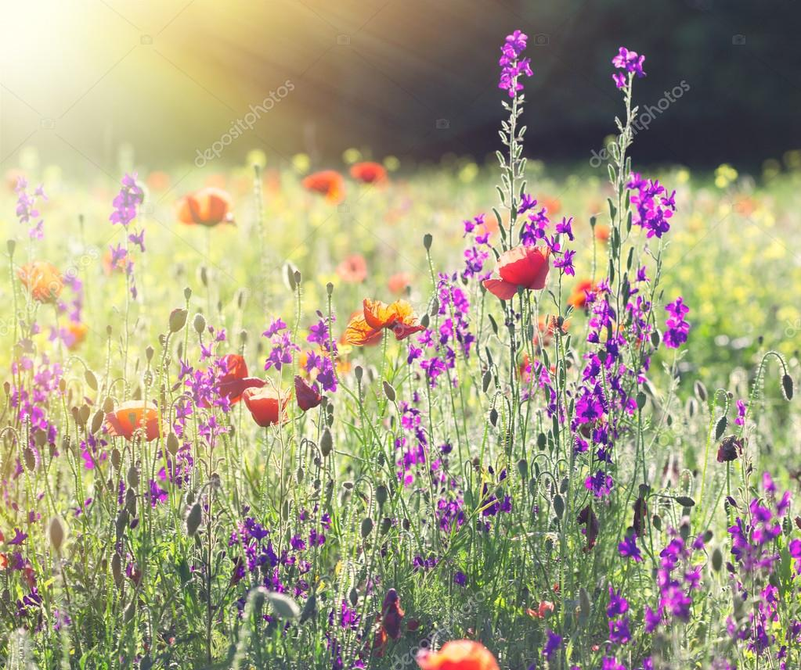

Alles over Veldbloemen en Weidebloemen en het maken van je eigen pluktuin
Veldbloemen en weidebloemen zijn termen voor bloemen die in de Nederlandse natuur groeien. Het zijn bloemen die vaak heel aantrekkelijk zijn voor bijen, vlinders en andere insecten. Daarnaast zijn ze ook nog eens heel mooi om te zien. Ik geef je tips om van jouw tuin een mooie bloemenweide te maken.
Hoe begin je een pluktuin
Ik heb al jarenlang het plan gehad om een pluktuin aan te leggen. Nu is het moment daar en kijk ik uit naar zelfgemaakte plukboeketten. Ik neem je mee bij de aanleg van onze nieuwe pluktuin en hoop je te inspireren ook een pluktuin of een plukhoekje aan te leggen.